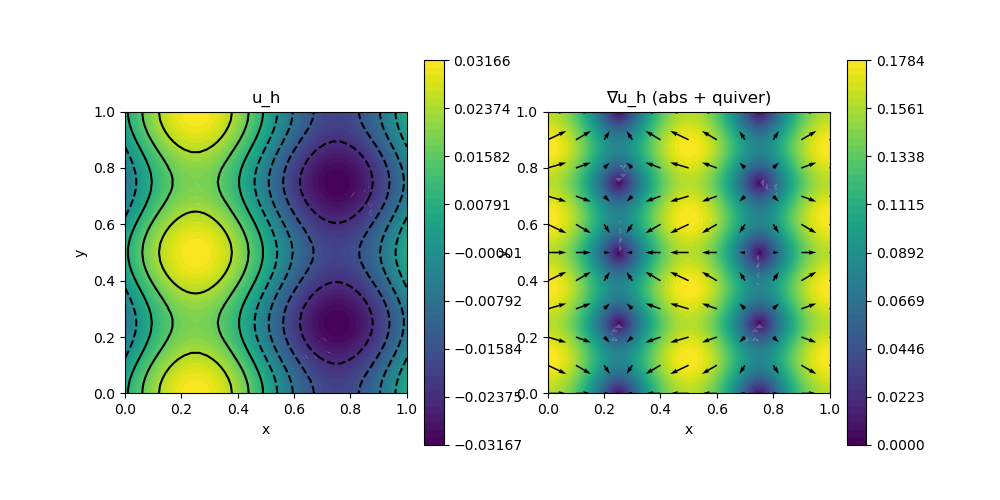

A10 : Poisson-Problem with periodic boundary
This example computes the solution $u$ of the Poisson problem
\[\begin{aligned} -\Delta u & = f \quad \text{in } \Omega \end{aligned}\]
with some right-hand side $f$ on the unit square domain $\Omega$ with periodic boundary conditions in both directions.
module ExampleA10_PoissonPeriodic
using GradientRobustMultiPhysics
using ExtendableGrids
using GridVisualize
# right-hand side function
const f = DataFunction((result, x) -> (result[1] = sin(2*pi*x[1]) + cos(4*pi*x[2]);)
,[1,2]; dependencies = "X", name = "f", bonus_quadorder = 5)
# everything is wrapped in a main function
function main(; verbosity = 0, μ = 1, order = 2, nrefinements = 5, Plotter = nothing)
# set log level
set_verbosity(verbosity)
# build/load any grid (here: a uniform-refined 2D unit square into triangles)
xgrid = uniform_refine(grid_unitsquare(Triangle2D), nrefinements)
# create empty PDE description
Problem = PDEDescription("Poisson problem")
# add unknown(s) (here: "u" that gets id 1 for later reference)
add_unknown!(Problem; unknown_name = "u", equation_name = "Poisson equation")
# add left-hand side PDEoperator(s) (here: only Laplacian)
add_operator!(Problem, [1,1], LaplaceOperator(μ))
# add right-hand side data (here: f = [1] in region(s) [1])
add_rhsdata!(Problem, 1, LinearForm(Identity, f; regions = [1]))
# discretise = choose FEVector with appropriate FESpaces
FEType = H1Pk{1,2,order}
FES = FESpace{FEType}(xgrid)
Solution = FEVector("u_h", FES)
# add periodic boundary
dofsX, dofsY = get_periodic_coupling_info(FES, xgrid, 2, 4, (f1,f2) -> abs(f1[2] - f2[2]) < 1e-14)
add_constraint!(Problem, CombineDofs(1, 1, dofsX, dofsY))
dofsX2, dofsY2 = get_periodic_coupling_info(FES, xgrid, 1, 3, (f1,f2) -> abs(f1[1] - f2[1]) < 1e-14)
add_constraint!(Problem, CombineDofs(1, 1, dofsX2, dofsY2))
# show problem and Solution structure
@show Problem Solution
# solve for chosen Solution vector
solve!(Solution, Problem; show_statistics = true)
# plot solution (for e.g. Plotter = PyPlot)
p = GridVisualizer(; Plotter = Plotter, layout = (1,2), clear = true, resolution = (1000,500))
scalarplot!(p[1,1], xgrid, view(nodevalues(Solution[1]),1,:), levels = 7, title = "u_h")
scalarplot!(p[1,2], xgrid, view(nodevalues(Solution[1], Gradient; abs = true),1,:), vscale = 0.8, levels = 0, colorbarticks = 9, title = "∇u_h (abs + quiver)")
vectorplot!(p[1,2], xgrid, evaluate(PointEvaluator(Solution[1], Gradient)), spacing = 0.1, clear = false)
end
# This function computes the coupling information for boundary regions b1, b2
# the is_opposite function evaluates if two provided face midpoints
# are on opposite sides to each other (the mesh xgrid should be appropriate).
# Then the boundary dofs of the finite element space FES are matched
function get_periodic_coupling_info(FES, xgrid, b1, b2, is_opposite::Function)
xBFaceFaces = xgrid[BFaceFaces]
xBFaceRegions = xgrid[BFaceRegions]
xBFaceNodes = xgrid[BFaceNodes]
xCoordinates = xgrid[Coordinates]
nbfaces = size(xBFaceNodes,2)
xdim = size(xCoordinates,1)
xBFaceMidPoints = zeros(Float64,xdim,nbfaces)
for bface = 1 : nbfaces, j = 1 : xdim, bn = 1 : 2
xBFaceMidPoints[j,bface] += xCoordinates[j,xBFaceNodes[bn,bface]] / xdim
end
xBFaceDofs = FES[BFaceDofs]
dofsX, dofsY = Int[], Int[]
counterface = 0
nfb = 0
for bface = 1 : nbfaces
counterface = 0
if xBFaceRegions[bface] == b1
for bface2 = 1 : nbfaces
if xBFaceRegions[bface2] == b2
if is_opposite(view(xBFaceMidPoints,:,bface), view(xBFaceMidPoints,:,bface2))
counterface = bface2
break
end
end
end
end
if counterface > 0
nfb = num_targets(xBFaceDofs, bface)couple first two node dofs in opposite order due to orientation
push!(dofsX, xBFaceDofs[1,bface])
push!(dofsY, xBFaceDofs[2,counterface])
push!(dofsX, xBFaceDofs[2,bface])
push!(dofsY, xBFaceDofs[1,counterface])
for dof = 3 : nfb
push!(dofsX, xBFaceDofs[dof,bface])
push!(dofsY, xBFaceDofs[nfb+3-dof,counterface]) # couple face dofs in opposite order due to orientation
end
end
end
return dofsX, dofsY
end
endThis page was generated using Literate.jl.
Default output:
julia> ExampleA10_PoissonPeriodic.main()
Problem =
PDE-DESCRIPTION
===============
system name = Poisson problem
id | unknown name / equation name
[1] | u / Poisson equation
LHS block | PDEOperator(s)
[1,1] | (∇u,∇v) (APT = SymmetricBilinearForm, AT = ON_CELLS, regions = [0])
RHS block | PDEOperator(s)
[1] | (f, id(v)) (APT = LinearForm, AT = ON_CELLS, regions = [1])
BoundaryOperator[1] :
GlobalConstraints[1] : CombineDofs[1,1] (ndofs = 96)
GlobalConstraints[2] : CombineDofs[1,1] (ndofs = 96)
Solution =
FEVector information
====================
block | ndofs | name (FEType)
[ 1] | 8321 | u_h (H1Pk{1,2,2})
